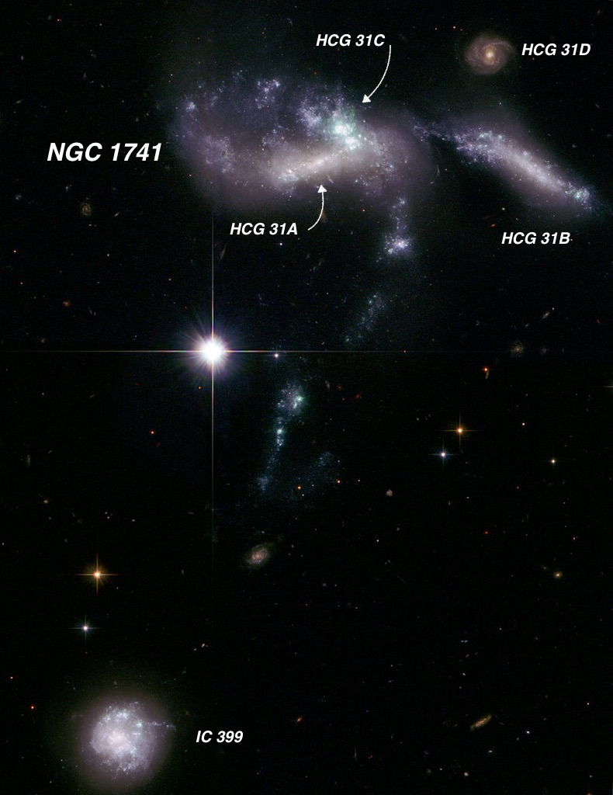

Lopsided NGC 1637
- Name: NGC 1637
- RA: 04 41 28.0
- Dec: -02 51 29 (Eridanus)
- Type: SAB(rs)c
- Aliases: UGCA 93 = MCG +00-12-068 = CGCG 393-066 = PGC 15821
- Size: 4.0' x 3.2'
- MagV: 10.8
- MagB: 11.5
- Distance: 25-35 million l.y. (mean 30 million l.y.)
- NGC description: considerably bright, large, round, very gradually brighter middle
NGC 1637 is another William Herschel discovery that should be better known. He discovered it on 1 Feb 1786 -- his 518th sweep -- and called it "cB, vL, irregular round, bright middle, easily resolvable, 5' or 6' diameter." John Herschel made two observations from Slough, England – once describing it as "bright" and another time as "pretty faint".
NGC 1637 was an object of interest to Lord Rosse as a total of 15 observations were made with the 72-inch. Why the interest? Well as early as 1848 it was described as a spiral nebula. A year later "two suspected knots" were reported. In 1856, the observed "suspect[ed] very strongly that it is a right handed spiral, but the outlying nebulosity is very faint." Again in 1858, "the brightest part is south-preceding the nucleus." The galaxy was sketched with an offset nucleus and what appears to be one long spiral arm (Plate XXV, figure 9 in the 1861 publication).
Images show its lopsided or "sloshed" appearance with two main arms coming off the bar, though one is massive and wraps around the south, east and north sides of the galaxy. Actually quite a bit like Lord Rosse's sketch. Often this type of asymmetry is caused by an interaction with a neighboring galaxy, but in this case there is none around.
The galaxy experienced a type II-P supernova in 1999 (SN 1999em, discovered at Mt Hamilton), which was thoroughly followed for 517 days and a distance was established in 2002 based on the "expanding photosphere" method. Type II-P are classic core-collapse supernovae resulting from isolated, very massive stars with thick hydrogen envelopes. The "P" refers to a plateau in the light curve. The distance was determined to be ~26 ± 2 million light years.
Interestingly, the following year a study was published based on 41 Cepheid variables that were discovered by the HST in NGC 1637. This produced a distance estimate of 38 ± 3 million light years, nearly 50% further than the distance earlier derived based on the supernova. That's how it goes sometimes with astronomical research!

ESO made the VLT image of the galaxy into a video with music here and you might get the impression that the bright "star" above the galaxy visible towards the end of the short clip is the supernova. It's not -- rather a brighter Milky Way foreground star.
The galaxy is easy to locate – midway between 4th-magnitude Mu Eridani, which is 1° ESE and 5th-magnitude 51 Eridani, which is 1° WNW! An 18-inch scope should show the asymmetry as well as the spiral structure to the north. My last observation was through Jimi's 48-inch and it was a striking object.
Overall, this bright galaxy appeared slightly elongated SSW-NNE, 3'x2.5'. It contained a large bright core with an elongated bright nucleus that appeared to be a bar oriented E-W. The structure was quite irregular due a thick, fairly prominent spiral arm that curved north-south along the eastern side of the halo and bent west as it curved counterclockwise on the north side. A darker gap was evident between the slightly brighter inner edge of this thick arm and the core. A small section of another spiral arm was attached at the southwest side of the core. Overall, the southwest side of the halo is fainter and not as extensive as the northeast side, so the galaxy has a lopsided appearance.
By the way, while you're in the area, absolutely don't miss NGC 1618, 1622 and 1625, a great trio of bright edge-ons a little over 1° to the west-southwest!
I don't believe this trio has ever been featured as an OOTW. Hmmm...
As always,
"Give it a go and let us know!
Steve's follow-up — January 1st, 2019, 04:40 AM
I've only observed HCG 30 with my old 17.5" back in February 1997, but here are my notes --
HCG 30A: the brightest of three; fairly faint, elongated 5:3 NW-SE, 1.0'x0.6', brighter core. Located 40" NW of a mag 11 star. HCG 30B is 3.6' SE and HCG 30C lies 2.2' NE.
HCG 30B was just slightly fainter than HCG 30A and the dimensions are similar. Overall, faint, elongated 5:3 SSW-NNE, 0.9'x0.5'. A mag 12 star lies 1.3' S (nearly collinear with the major axis). An easy mag 13-14 triple star (separation 15" and 28") lies 2' following.
HCG 30C was an extremely faint and small glow, round, ~10" diameter. It was visible with averted vision and concentration perhaps 1/3 of the time . Situated 35" E of a mag 14 star and 2.2' NE of HCG 30A.
HCG 30D was only suspected for a couple of moments but I wasn’t able to confirm with any confidence.